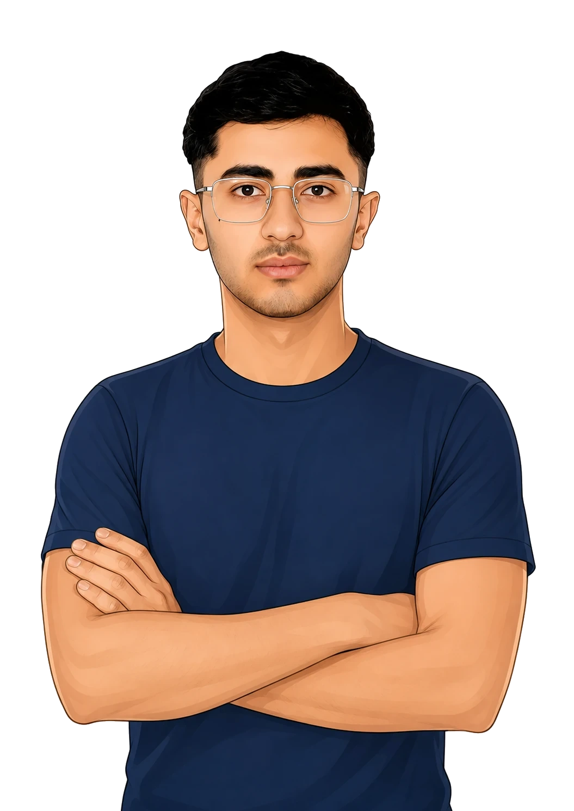

توسعهدهنده وب فولاستک و مدرس دیتابیس از کندز، افغانستان | Full-Stack Web Developer & Database Instructor from Kunduz, Afghanistan.
توسعهدهنده وب فولاستک و مدرس دیتابیس از کندز، افغانستان، متخصص در PHP، MySQL، JavaScript و معماری دیتابیس.
Full-Stack Web Developer & Database Instructor from Kunduz, Afghanistan, specializing in PHP, MySQL, JavaScript, and database architecture.
کارشناسی علوم کامپیوتر (فناوری اطلاعات) — دانشگاه کندز | B.Sc. in Computer Science (Information Technology) — Kunduz University
Email: samimohammadi@aol.com | GitHub: github.com/callmearab | LinkedIn: linkedin.com/in/samimuhammadi